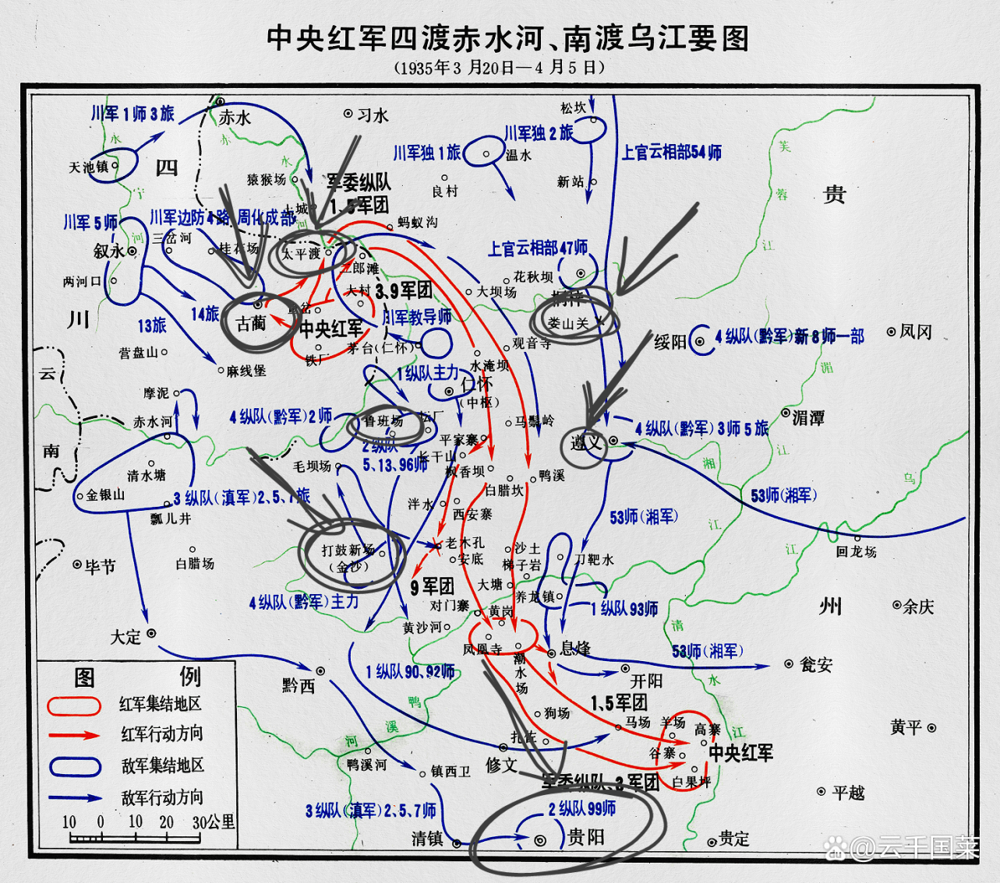
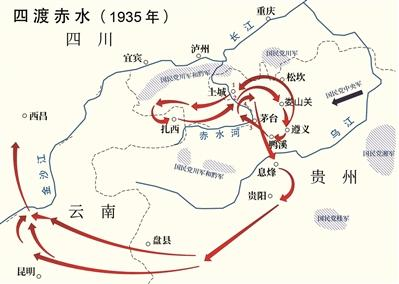
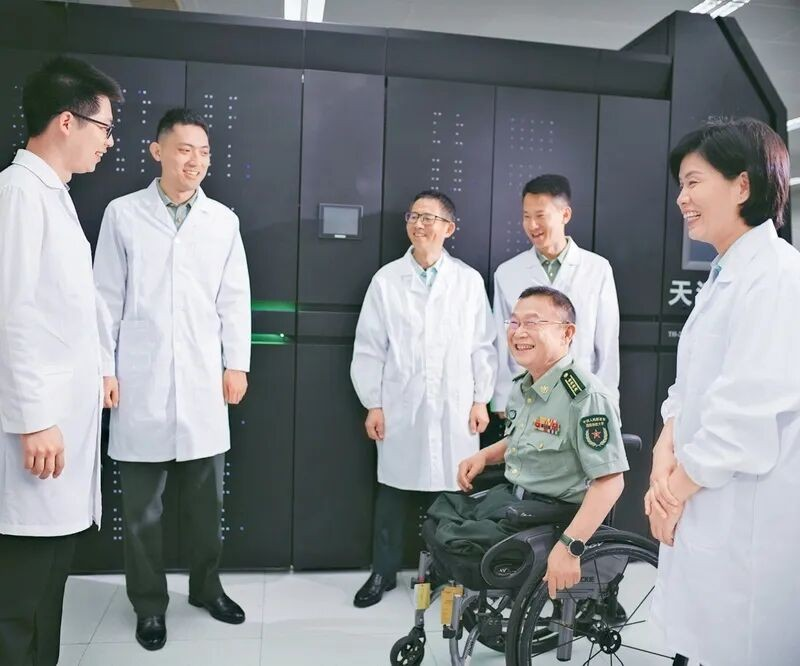
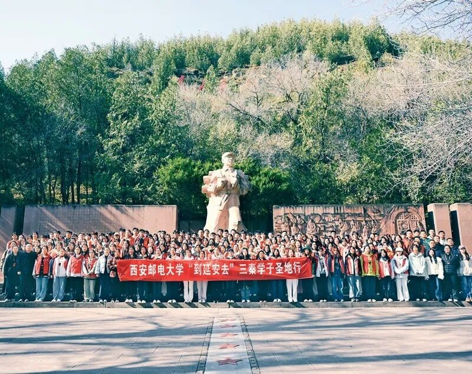
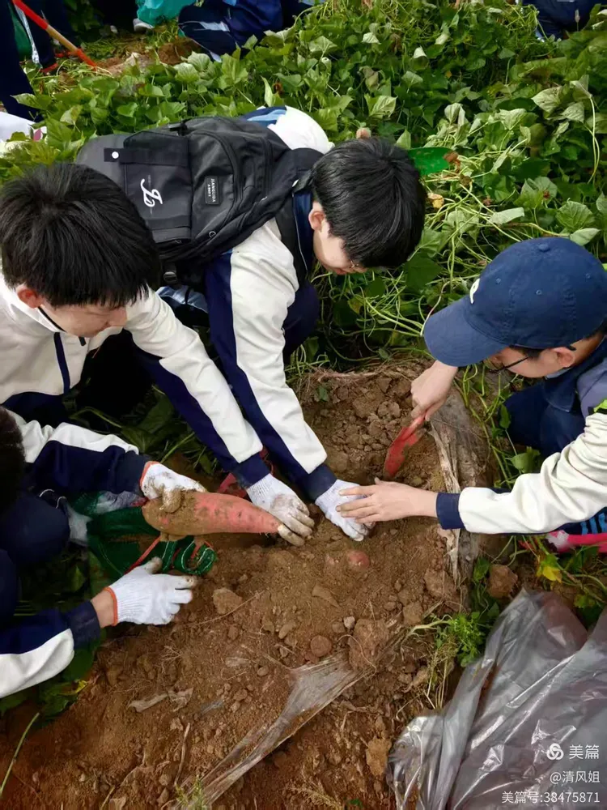
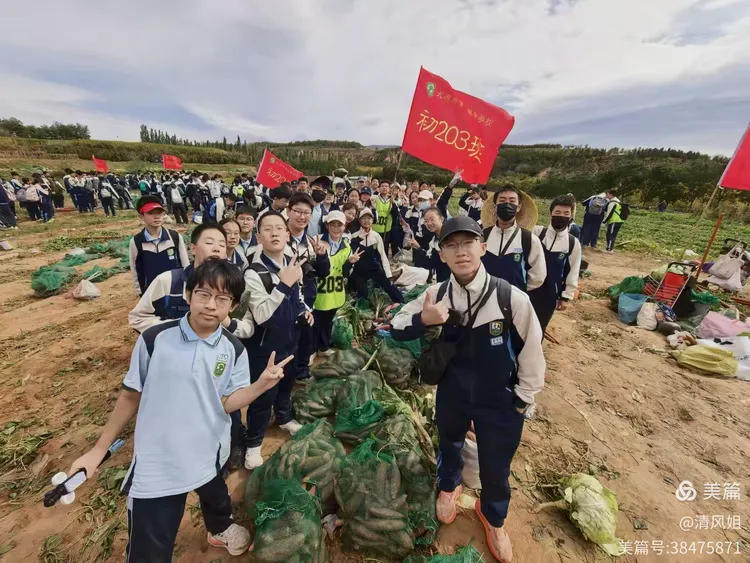
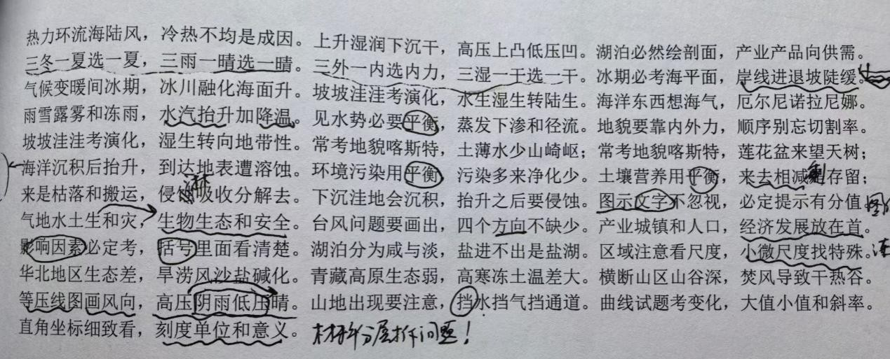
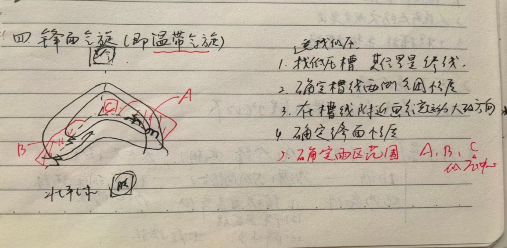
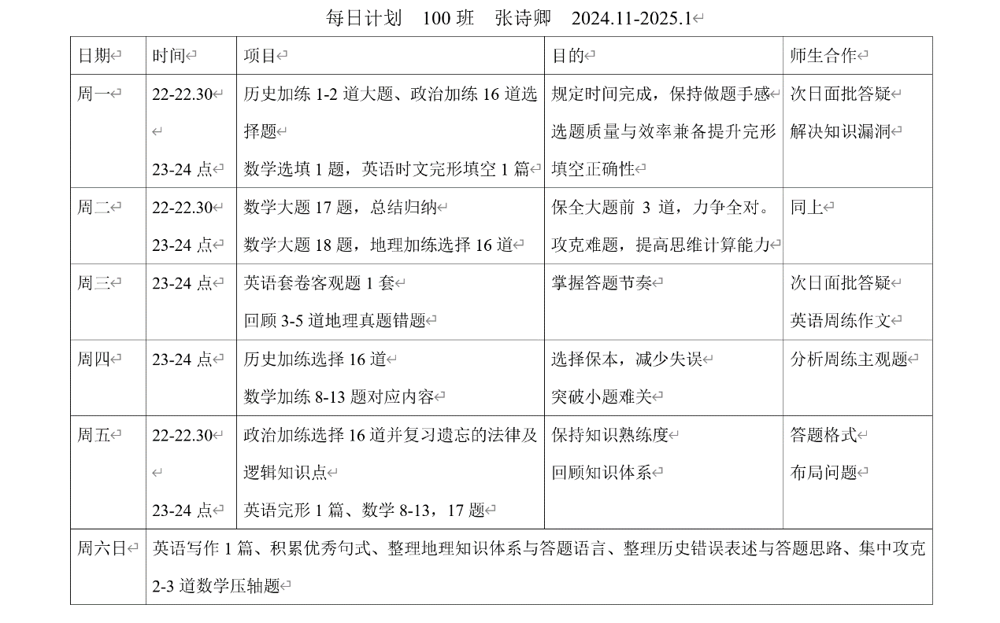

四渡赤水的来龙去脉比较复杂，我把它拆成下面几个板块来讲——

四渡赤水发生在长征期间。先说一点背景：1921年中国共产党成立，当时全国处于北洋军阀割据的局面。1924年国共实现第一次合作，目的就是共同消灭军阀，为此创办了黄埔军校，随后发动北伐战争，这段时期又称国民革命时期。
到1927年前后，北伐进展顺利，北洋军阀势力基本被清除，南京国民政府在名义上统一了全国，但各地实际上仍是割据状态。此后汪精卫、蒋介石等国民党右派发动清党，大肆屠杀共产党人，国共合作破裂。
中共随即展开反抗，1927年8月1日南昌起义爆发，由此进入国共十年内战时期，又称土地革命时期。之所以是“十年”，是因为十年后的1937年日本发动全面侵华，国共实现第二次合作，共同抗日。
十年内战又可以分成三个阶段：1927—1934年，建立革命根据地、开展工农武装割据、反“围剿”；1934—1936年，长征；1936—1937年，红军主力会师、建立新的革命根据地。
四渡赤水就属于长征时期的一场著名战役。长征的直接起因，是第五次反“围剿”失败，红军被迫进行战略转移。
请务必记住长征的目标：北渡长江，与甘肃、宁夏的红二方面军、红四方面军会合。这一点后面处处用得到，记不住的话，看到后面容易忘了到底在干什么。
红军从江西瑞金一带出发西行。为什么要西行？因为长征的目标是北渡长江、与甘肃宁夏的红二、红四方面军会合，而甘肃、宁夏在江西的西北方向。
四渡赤水的起点在遵义。先交代红军是怎么从江西走到贵州的。
红军突破国民党军三道防线后，进入广西湘江一带，遭遇了损失惨重的湘江战役，主力从8.6万人锐减到3万人。之后继续西进，到达贵州黎平，在这里召开了黎平会议。
黎平会议的内容大致是：博古等人坚持“北上湘西”，直接北渡长江去和主力会合。从地图上看，这条路确实近一些，但当时蒋介石已经在那里布下重兵，硬闯等于自投罗网。
毛泽东的计划是进军敌人兵力薄弱的贵州，化被动为主动。这里要说明一下：毛泽东并不是有什么未卜先知的本事，他做出这个决定，只是因为“北上湘西”几乎必死无疑，而进军贵州可能还有一线生机，他也无法保证一定能赢。他选择的打法是运动战，在运动中寻找突破口——与其等着机会找上门，不如主动去创造机会。
黎平会议之后，红军强渡乌江、攻下遵义城，正式来到四渡赤水的起点。
在这里，中共召开了一次十分重要的会议——遵义会议，核心内容是纠正博古等人在军事指挥上“左”的错误，并增选毛泽东为中央政治局常委。简单地说，就是毛泽东由此掌握了军事指挥权。
再次强调：红军打的是运动战，不是阵地战。所以打下一座城，并不是躲在里面不出来，而是要继续向外打。红军继续北上，打到四川、贵州交界的土城，在这里和川军打了“土城战役”，这就是一渡赤水的导火索。
土城战役因为情报有误，红军伤亡惨重，党内上下商议后决定退出战斗，一渡赤水，紧急撤往古蔺、叙永一带。
所以一渡赤水其实很朴素，就是打不过就跑。打不过就跑不丢人，关键是看这仗值不值得继续打：如果明明能打，却因为怕死逃跑，那当然丢人；但现在对方兵力碾压你，硬碰硬必死无疑，那还不跑？而且这还得看是什么仗——如果是阵地战，你跑了阵地就是别人的了，那当然不能跑；可红军打的是运动战，机动和转移本来就是打法的一部分。
一渡赤水之后，红军撤到古蔺、叙永，尝试直接北渡长江，但蒋介石把包围圈收紧了，红军硬往北上一碰就死。于是红军南撤，临时撤到了云南的扎西。
在这里召开了扎西会议。我先不直接说会议内容，可以先想一想：你现在人在云南，目标是北渡长江；你刚从贵州打到四川，想在四川北上，发现走不通，又临时撤到扎西——核心目标不变，你会怎么走？金沙江走不了，有川军守着，好像怎么走都无计可施，成了瓮中之鳖。那毛泽东是不是有什么办法？
我来讲扎西会议的核心内容——打回贵州。因为贵州相对其他地方好打一些，这一点从红军能从遵义一路打到土城就能看出来。
我第一次看到“打回贵州”这几个字，有一种大道至简的感觉：很少有人会想到走回头路，但它确实可行，只是迂回了一下。
这里说明一下，为什么选择打回贵州，而不是就地留在云南。两个原因：第一，滇军比黔军强得多，黔军以“双枪兵”（步枪加烟枪）闻名；第二，军阀之间有矛盾。
细说一下军阀之间的矛盾。北伐胜利后虽然名义上统一了全国，但那只是名义上的，私下各地都在各自割据。蒋介石的中央军是嫡系，川军、滇军、黔军、桂军这些则是各地军阀的部队。蒋介石一直想渗透这些军阀，因为他们才是各自地盘的实控人，蒋介石管不到；这些军阀也知道蒋介石的心思，所以一直防着他。
再说为什么“防中央军”就要选贵州。先介绍滇军军阀龙云：他在云南统治基础深厚，军队纪律严明、战斗力强。黔军军阀王家烈：他在贵州统治基础很薄弱，甚至还有政敌，他最怕的就是蒋介石的中央军开进来。
所以，选龙云，就像踢开一扇门，门外还蹲着一条狗；选王家烈，就像对付一个病号。因为王家烈实力差，他绝不会让中央军近身，只想赶紧把红军送走；龙云有实力，中央军站在他家门口他也不怕（当然真进了门也不行）。
这就是毛泽东避实击虚的打法。于是红军悄悄从太平渡口（土城渡口下面一点）二渡赤水，回到了贵州境内。
所以二渡赤水的核心就是避实击虚：一渡赤水是打不过就跑、被动撤退；二渡就是避实击虚、主动去打好打的那一边。

三渡赤水和四渡赤水其实是连在一起的一整套动作。先接着二渡往下讲。
红军二渡赤水后，很快打下了太平渡口附近的娄山关，这就是“娄山关战役”。接着红军一路南下，再次打回遵义。回到遵义后召开了苟坝会议，会上有人提议去打遵义西南方向的打鼓新场，理由是那里的黔军兵力薄弱。当时几乎所有人都同意了，除了毛泽东。
毛泽东反对，并不是他有什么神机妙算，而是因为打鼓新场正上方和遵义处在同一水平线的鲁班场，驻有周浑元率领的中央军三个师。
那为什么其他人没发现呢？因为在红军看来，中央军就在自己眼皮底下驻军，怎么想都觉得是要来打自己；可当时周浑元并没有打，而是在修筑防御工事，这就很让人摸不着头脑，给人一种“不关我事了吧”的感觉。
打鼓新场的提案被否决后，毛泽东想出了一套调动四十万大军的方案。
首先，在茅台渡口（古蔺旁边、太平渡口下面），让红军白天大摇大摆地渡河，这是三渡赤水。随后，大部队关闭所有电台，隐蔽到山林里；另派一支奇兵前往古蔺，故意让蒋介石截获他们在古蔺的电台信号。蒋介石据此派大军包围古蔺，以为稳赢了，还亲自到贵阳督战。
这一段不太好懂？其实是这样：任何一个人看见一堆人白天大摇大摆渡江，都会觉得其中有诈；而古蔺地区又出现了电台信号。蒋介石的逻辑是——“你们想北渡长江，故意在古蔺暴露信号，这一定是声东击西，我早就看穿了”，于是亲自到贵阳坐镇。但这次红军恰恰就是真的在白天渡江——毛泽东预判了蒋介石的预判。
等各方大军开始调动之后，红军趁夜色秘密四渡赤水，悄悄南下。途中红军破译了敌方电报，得知蒋介石就在贵阳，于是将计就计，突然直扑贵阳。蒋介石很怕死，马上调兵“救驾”。与此同时，红军留在古蔺的那支奇兵从太平渡口渡河，继续北上，佯装要继续北渡长江，把这四十多万大军往北引；而红军主力实际上一直在往南走。
红军南下进入云南的路上，本来有滇军驻守，但蒋介石调兵救驾把滇军调走了，红军一路畅通无阻。来到金沙江畔后，红军靠着几条小船巧渡金沙江，成功跳出了四十万大军的包围圈。
说句实在话，看了这么多所谓的“神机妙算”，其实那些谋略的水平，大多也就勉强到“一渡、二渡”那种程度，更别提三渡、四渡这种牵着对手鼻子走、把对方耍得团团转的操作了。
其实所谓谋略并没有那么高深，都是在一定条件下实事求是、具体分析得出的。毛泽东决定进军贵州的时候，并不知道后面会有四渡赤水，也不知道能不能赢，他只知道根据当时的情况分析：北上湘西只能送死，挺进贵州可能还有希望；至于后面的路，就到时候再说。
不光是打仗，你干任何一件事，想让它一丝一毫不差都不可能。变量无时无刻不在出现，我们要学会接纳变量、利用变量。站在进军贵州的起点上，你根本看不到逃出包围圈的可能；但进军贵州之后，机会就出现了。■
长征，步步是险境、处处生死关，然而，红军将士与国家命运同频、与民族存亡共振，一路闯关夺隘，铸就了中华民族伟大复兴历史进程中的巍峨丰碑。一代人有一代人的长征路，一代人有一代人的攻坚战场。我是一名军人，也是一名国防科研工作者，在今天弘扬伟大长征精神，就是要把个人奋斗和国家命运紧密相连，与国家需要同频共振，坚持立德树人、为战育人，追逐前沿科技，为科技强军努力工作，全力奔赴实现建军一百年奋斗目标。
很多人认识我，是从“时代楷模”“轮椅上的科研战士”这些“标签”开始的。当年支援三线建设的父母给我取名“戟”，戟者，国之利器，就是希望我能执戟以卫国家。小时候我喜欢跟着父亲去厂房，看工程师们围在一起推演数据、破解难题，一群人埋头苦干、为国奉献，谁也不说一个累字。那个画面一直刻在我心里，那股劲儿也一直影响着我。后来，我从一个懵懂少年考入国防科技大学。入学后不久，由国防科大计算机研究所研制的“银河-Ⅰ”亿次巨型计算机研制成功，这一喜讯激荡着我，那天听到广播后同学们震天的欢呼声，仿佛还在耳畔。从那一刻起，我感觉，我的生命和我们的国家、民族是绑在一起的。

习近平主席指出，长征的胜利，靠的是红军将士压倒一切敌人而不被任何敌人所压倒、征服一切困难而不被任何困难所征服的英雄气概和革命精神。我们国防科研工作者身上也有这样的革命精神，那是一种“军人+科研人”的双重荣光。老一辈“哈军工”人在北国雪原白手起家，开创新中国军事高等技术教育先河；四十多年前国防科大银河事业的前辈们在实验室通宵达旦，冲破外部技术封锁，拼着一口气研制出“争气机”；新时代的国防科大人攻坚关键核心技术，实现国防科技创新一步步从跟跑、并跑到部分领跑。当年的故事我听说过，那些场景我看见过，登顶的艰辛和喜悦我经历过。为强军事业育人才，为国防安全铸重器，我的老师、身边的同事都是这么奋斗过来的。
2013年11月，习近平主席在国防科技大学视察时，要求我们努力把国防科大办成高素质新型军事人才培养高地、国防科技自主创新高地。“高地”是习近平主席对国防科大的定位，也是我们奋斗的目标。作为一名军队院校的科研人员，我的使命就是服务国家对军事技术的需要与发展，部队最紧缺的东西是什么，我们就应该去做什么。如果把科研攻关看作是一条长征路的话，我坚信，只要沿着目标去走，有坚定的理想信念，就能够作出正确的选择。我曾以为，是我选择了“高可信软件技术”这条路，其实，是时代选择了我，是强国强军的使命推着我不断向前。记得有一次参加学术交流，一家外国企业正要展示软件，但当听说我们是中国人时，立刻借故回绝了。这背后是无声的较量。“高可信”这3个字，对旁人也许是“冷”的，但对国家一定是“对”的；这也许不是科研“热门”，但一定是安全“命门”。我们做的研究就是托举国之重器的底气，国家的需求在哪里，“卡脖子”的痛点在哪里，科研人员奋斗的阵地就在哪里。
长征本就是一条没有现成答案的路，今天的自主创新同样是拓荒之旅。基础研究是一项探索未知的事业，把它搞上去，需要热爱和坚守。我毕业的时候，导师陈火旺院士在我的毕业纪念册上写下“宁静而致远”几个字。老师是要告诉我，只有静得下心，才能走得更远。我的事业短期内可能比较难出成果，但基础研究瞄准的就是未来，总得有人去干。做这一行，就得有十年磨一剑的耐心，有走二万五千里的准备。长征永远在路上，高可信软件技术的研发永远在路上。服务强军备战打赢，满足战斗力对软件不断增长的需求，就是我们的长征路，必须加倍努力，一项一项突破瓶颈，把国家安全的主动权牢牢掌握在自己手中。
2023年9月，习近平主席在致国防科技大学建校70周年的贺信中，要求我们勇担时代重任，锐意开拓进取，努力在实施科技强军战略、人才强军战略中发挥重要作用。置身滚滚向前的时代浪潮，科技在变革，军队在攻坚，民族复兴的伟大梦想越来越近，这种强烈的时代“推背感”，让我决心在有限的工作时间里，尽量做更多有意义的事，扛起使命、继续冲锋。只要我的大脑还能思考，手还能动，我就会持续解题、不断冲锋。
走好新时代科研长征路，是一项使命，更是一种精神、一份传承，每一个为国铸盾的科研人员都奔跑在这条路上。心中有信仰，脚下就有力量。我们将继续努力工作，让写下的每一行代码，都能为国防装备更可靠提供支撑；让培养的每一名学生，都能在关键领域关键时刻顶得上、扛得住；让中国人在关键软件领域掌握属于自己的核心技术，守住大国科技的底气与尊严。■
和学生谈起长征，我会问：“当你听到‘二万五千里长征’，脑海里浮现的是什么？”有学生会说起爬雪山、过草地的漫漫征途，有学生会背出“红军不怕远征难，万水千山只等闲”等诗句。我会接着问：“这段历史和今天的我们有什么关系？”其实，这也是我从事高校思想政治工作十几年来不断叩问自己的问题：今天究竟该如何走好我们这代人的长征路？回望陪伴一届届青年学生成长的岁月，答案逐渐清晰。
走好新时代的长征路，首先要答好“信仰”这道必答题。有人说，给大学生讲理想信念，他们难以接受。我并不认同，学生不是不信，是要用他们听得懂、能接受的方式去讲才行。长征路上红军战士平均年龄不过二十岁，跟我带的学生年龄相仿，支撑他们跨越雪山草地、走完数万里征途的，正是心中的信仰之火。我把这些故事讲给学生听，不端大道理，只讲“同龄人”的选择，尤其讲到湘江战役中的年轻战士时，教室里安静得可以听见呼吸声。那一刻，信仰不再是抽象的概念，而是落在具体鲜活的人身上，厚重而温热。

工作越久我越发感觉，无论是辅导员还是思政课教师，本质上都在做同一件事——在青年人心里“种火”。当代青年身处信息社会，遇到问题，搜索平台、短视频、人工智能会输出海量资讯，答案唾手可得。但难题随之而来，纷繁信息里到底该信什么？平台推荐、流行话语、同龄人的生活样本不断涌入视野，很多青年思想困惑并不表现为宏大发问，而是化作学习倦怠、情绪宣泄、前途焦虑等日常状态，背后其实藏着对人生价值的思索。怎样读懂这些琐碎的烦恼，帮他们分清什么值得相信和坚持，成了我和学生交流时绕不开的课题。
大道理学生往往听不进去，把道理糅进故事里，他们自然就懂了。我于是放下讲稿，和同学们聊长征路上的“高光时刻”与“至暗时刻”，一起探讨红军战士身处危境却永不言弃的力量来源。我常打比方：学习生活里的疑难杂症，就是青年要攻克的“娄山关”“腊子口”；科研路上的“卡脖子”难题，就是青年要征服的“大渡河”。闯过去，便是一次跨越天险的胜利。我也常拿长征故事给学生打气：学业艰辛时，想想啃着树皮前进的红军战士；科研碰壁时，想想沼泽地里奋勇探路的先锋团战士。在青年人心里“种火”，大概就是让他们从真实的人和选择中，懂得坚守与信仰。
长征精神要“活”起来，光靠课堂讲授还不够，必须坚持理论与实践相结合，让青年大学生读好“有字之书”和“无字之书”，在服务社会第一线的新长征路上建功立业。2016年暑假下乡调研的经历让我对此体会尤深。调研途中，我发现不少革命老区、贫困山区的孩子谈起科学时满是好奇却又有些陌生，由此萌生打造“科技小屋”的想法——为山里孩子建一间能动手、能体验的科学实验室。说干就干，我和学生从陕北黄土高原到秦岭大山深处，走访学校、设计方案、筹措资源。2017年3月，首个科技小屋建成。此后近十年间，1800余名大学生接力奉献，60多个科技小屋相继落地，不仅成了山里孩子接触科学的窗口，更成了青年学生锤炼自身的课堂。当听说从未出过县城的孩子因在科技小屋练就的特长被市里中学录取，我和同学们欢欣鼓舞。当看到毕业学生感慨参与建设科技小屋是大学时代最有意义的事情，我觉得这就是我作为高校思想政治工作者的最大成就。我时常想，这段历程本身就是一场长征，一间间小屋，是递给孩童的火把，也是照见我们自己的灯。
2019年，我作为全国青年代表，在北京人民大会堂现场聆听了习近平总书记在纪念五四运动100周年大会上的重要讲话。总书记深情寄语青年：“一代人有一代人的长征，一代人有一代人的担当。建成社会主义现代化强国，实现中华民族伟大复兴，是一场接力跑。”这更加坚定了我做好青年思想政治工作的信心。回想长征路上，党中央要求在政治工作上要利用各种机会各种方法，针对战士们的情绪、疑问与不解，不断进行解释教育。那些行军中的宣传、篝火旁的解惑，正是这支队伍一路走向胜利的密码。如今硝烟散去，但“行军路上的思想政治工作”从未走远，而是以另一种方式走进校园。落到我们辅导员身上，就是一次次谈心谈话，一次次宿舍走访，一次次把道理掰开揉碎讲透、送到学生心里。从雪山草地的篝火到大学校园的灯火，时代虽然改变，但贴近人心、同行相伴的初心始终不变。
渐渐地，我找到了开篇那个问题的答案。今天讲长征，不是让青年复刻苦难，而是教会他们在复杂环境中独立思考，于挫折中学会坚守。我们不能替青年选定人生道路，但可以在他们迷茫时陪伴引导，帮助其正视眼前得失，把个人选择与国家需求、人民需要结合起来，认清自身回馈社会的价值。现在，如何走好新时代的长征路，我也有了自己清晰的方向。作为高校辅导员，我们的新时代长征路，就是把长征精神讲活，把理想信念种进学生心里，护送一代代青年奔赴自己的人生征途。这条路没有终点，只有新的起点。就像当年红军出发时，没人知道要走多久，但所有人坚信，往前走，就一定能到达目的地。■
那是一个变革的时代，兵荒马乱，哀鸿遍野。韩赵魏三家分晋，周室衰微，天下群雄并起。魏文侯敏锐地捕捉到，周天子地位的下降，代表着某种制度的衰败。制度犹如支柱，若是支柱腐烂，一切终究轰然倒塌——他要找的，是一个全新的支柱。
从晋静公手中的笔落下之后，那个道义的春秋已经逝去，取而代之的是弱肉强食的战国，战马的嘶吼淹没了血肉绽开的声音。魏文侯之所以能被人们所记住，就是因为他第一个发觉了这种变化，当别的国家还没有反应过来的时候，他所领导的魏国却已经向成为猎手而努力。而地处中原的魏国沃野千里，河东故郡的生产力水平也支撑魏国的变法大业的推进。
春秋的孔子早已深埋土中，但他们的传人还有零星几点，遍布于华夏大地，而孔门十哲之一的子夏，成为当时继承儒家星火的领袖。彼时稷下学宫尚未开设，除了道家和儒家，诸子百家尚未成型，魏文侯在两者之间，选择了儒家。
彼时的秦国早已不见了当年穆公称霸西戎的强秦风范，犹如一匹颓唐的老马，在山东六国以西孤独徘徊，魏文侯派遣魏人吴起进行征伐，企图占领秦国的河西之地，吴起在不久之后去往楚国，同样惊天动地，此为后话。河西有一地名为西河，在这里，魏文侯没有用来耕种或是锻造，而是建造了一个书院，招募了一众士人，对秦国故地的百姓进行文化渗透，同时为魏国积攒人才，其中，就有当时士人阶级的领袖子夏。
士人阶级在此之前的地位都极为尴尬，他们没有德高望重的门第背景，有的只有心中的远大理想和满腹墨水，没什么人看重他们，他们是那个时代最无依的人，也是最自傲的人，最可恶的人，最后一点的发扬便源自魏文侯对他们的厚待与重用。
子夏尽管已经是满头白发的老者，却仍然很尽心尽力的为魏文侯主持了相当长一段时间的书院事宜，并培养出了相当一部分人才，这批人所组成的学派，被历史学家称为西河学派，而西河学派最具代表性的人物，便是魏人李悝。
在孔子的弟子中，子夏是最注重“术”的，而“术”的权力意义便在于国家首脑对于国家强有力的管辖，在李悝等人的发扬和改进下，儒家注重“术”的这一派逐渐形成一个全新的学说，这便是法家。
法家又分为术治、势治和法治，术治的代表人物为郑国人申不害，后面会有提到；势治的代表人物为慎国人慎到，基本没有为任何一国所用，故不作详尽论述，只需要知道，他与术治一样从道家而来即可；而法治则为李悝所代表的派别，也是最适用于当时国家治理的派别。这一派出现了许多名人名家，除李悝外，还有魏人吴起，以及那个最为闪耀的名字——商鞅。
先谈李悝，子夏在历经丧子之痛后便不再讲学，交由了他的几个弟子，子夏死后，李悝逐渐成长为西河学派的中心人物，也就是在这个时期，法家初步成型，法家的这一派由儒家的弟子创造，但孕育出的思想却与周王以及春秋时代的治国理念不相同，法治法治，所讲究的便是一个“法”，依法治国是李悝以及他的后来者的中心思想，法家与儒家的关键区别在于法家反对儒家所倡导的礼制，认为这是导致阶级对立的主要原因。时至今日，依法治国依然是国家掌握政权的中心方式。但在春秋战国，无论是儒家孔孟还是道家老庄，都没有像法家一样，对于法律有如此深刻的运用和重视。因此，魏文侯的尝试更多的是一种冒险，在那个诸国都大力发展经济和军事的时代，魏国从思想层面入手，进行变革。
魏国的变法在某种程度上决定了当时战国时代的上层结构，变法大大削弱了魏国的世卿世禄制，撰写了中国历史上第一部成文法典《法经》，以农为本，发展农业经济。变法的内容并不重要，重要的是他开创了一个时代，李悝以一种前无古人的方式发展经济和军事，用法律来严格规范人们的言行举止，对于商鞅而言，他有很多的范例可以参考，但对于李悝，并没有什么前人的成功与失败，他就是前人。
李悝代表的实质是当时人们的意志，人们渴望富强，而非单纯的富有，经历了多年的分裂与战乱，中华大地分久必合的愿望被潜移默化到每个人的心中。人们的意愿驱使着历史发展进程的转向，诸国关系由春秋时代的仁义礼智信，变成了弱肉强食的丛林法则，在这个背景下，李悝变法才得以实现，若是在几百年前，李悝以及他所代表的士人阶级便无法出现文侯时期的辉煌。
在李悝变法之前，吴起来到了魏国，吴起是一个极为典型的士人，为了功名利禄什么事情都做得出来，杀妻求将的故事叫他被诟病了几年，文侯一开始瞧不上他，觉得他品行太坏，但文侯看中了他的能力，将一个无名的武将提拔为位于魏国权力中心的人物，组建起战国时期第一支体系完善的先进军队——魏武卒。
魏武卒便是魏国军队的精锐，在吴起的操练下，魏武卒名扬四海，将西部的秦国人打得落花流水，祖宗疆土都归于他人，河西之地几乎尽收于魏，在变法政策的因素下，魏国的经济和军事进一步发展，这充分彰显了李悝变法的成功。魏国成为战国时期第一个霸主，这让各国都看到了变法之于国家的重要性，六国这时才被打醒，道义的春秋已经逝去，当浪潮已逝，没有人想成为被浪花拍在沙滩上坐以待毙的鱼。
但吴起终究被排挤走了，他的能力与当时的君主魏武侯不相上下，魏武侯意识到这个人很有可能威胁到自己时，便不留情面的赶走了他。
吴起去向了南方，那个同样被魏国后来者居上的楚国。
楚国当时的君主是楚悼王。楚国在春秋末期就不复霸主地位，被吴国打得险些灭国，和秦国一样，这个春秋战国时期第一个称王的国家，早已没有当年庄王时期的霸主地位，这个国家深陷于大士族内斗的泥沼，屈景昭三家彼此争斗，将这个国家不断拖入财政赤字和国防松懈的泥潭，东边的越国和齐国虎视眈眈，北边还有霸主魏国的侵袭，楚国面临的危机更为严峻。
吴起在率领魏武卒攻下西河后，被时任相国翟璜推荐成为西河郡守，担任郡守时期，也在子夏门下进行过学习，因此他的思想与李悝大同小异，同样是法家的法治学说，在李悝主持变法的几年后，吴起受魏武侯敕令，率领他一手训练出的魏武卒东征西讨，但最终却由于武侯猜忌而被迫南下，楚国在当年同样也是他的攻击对象，因此，楚国内部权力系统对于这个流亡的曾经的敌人并不友好。
但楚悼王并没有过多的在意吴起当年的身份。楚悼王的本意与魏文侯和魏武侯父子二人不同，他此时已经不再是一个先驱，有前人的示例做借鉴，而且他所为的是复兴楚国，复兴二字代表了对曾经的不甘，这份不甘不仅仅是悼王心中所想，每一个楚人都想着这两个字。况且屈景昭三家的内斗早已让楚人怨声载道，因此当吴起决定变法之后，迅速得到了楚悼王的支持。
有国家首脑做靠山，吴起便得以大展拳脚。他剥夺了大量属于楚国旧贵族的权力，例如子承父爵，定期放禄等等，以军功作为行赏的第一标准。
一时间，楚国的军事实力大幅度提升，不仅收复了大量前期魏国占领的大量失地，旧贵族的势力也被严重削弱。楚国复兴大业似乎近在眼前。
吴起变法之所以失败，便是对于变法这一事业的理解与考虑并不完全。楚国的旧贵族势力庞大，远非魏国可比。屈景昭三家势力盘根错节，即使吴起短暂的削弱了他们的力量，但仍无法撼动旧贵族的根基，他们早已渗透入每一个楚国人的生活。三家本就和楚王同为芈姓，即使楚悼王愿意，别的熊氏也不会愿意收拾他们的利益相关方。所以在楚悼王死后，吴起便没有了任何靠山，死在了楚悼王的灵柩之上。吴起的法律迅速被废除，似乎没有溅起任何水花，只在湘鄂山间留下了几声不甘的悲鸣。
在西河学派诞生的同一时期，稷下学宫也在齐国临淄创立。
稷下学宫始建于齐桓公时期，正式开学于齐威王初年。在此之前，田氏这一姜齐时代的权臣家族谋权篡位，取得了齐国的君位，新诞生的政权急于在文化思想上拉拢人心。在任何朝代，思想灌输都是统治者巩固政权的最佳手段。但稷下学宫却在历史上发挥出更为伟大的作用。齐威王时期，魏国和齐国最为强盛，西河学派的诞生，让魏国成为华夏文化的中心，因此，魏人成为当时山东六国朝堂上的常客，而齐国的经济繁荣昌盛，统治者招徕贤才的回报也更加丰厚，这也促进了齐国文教事业的发展，齐威王在淳于髡劝解后一鸣惊人，励精图治，进行变法，稷下学宫就是文化方面的重要政策手段。在魏国大力发展军事的同时，山东六国中的齐国远离中原兵马，尽管有魏楚滋扰，临淄的商业和手工业却依然繁荣，成为当时世上最富庶的都城之一，因此得以大力发展治学。
稷下学宫中，诸学派百家争鸣，进一步成熟了法家的理论体系，进一步厘清了法家三派的思想主张，而其中“术治”说的申不害便从此而出世。除儒家、道家和法家外，墨家、兵家、纵横家等百家竞相完善或出现，孟子、庄子等儒家道家的战国时代的代表人物出现，孟子就曾长期治学于稷下学宫。而兵家的代表人物孙膑也参与到这一学术盛会上，在被同门庞涓施以刖刑之后，孙膑厚积薄发，围魏救赵，声东击西，连续在桂陵、马陵之战中大败魏军，逼死了庞涓，一举取代了魏国的霸主地位。
尽管齐国为诸国提供了大量变法人才，为先秦时代的思想学术做出巨大贡献，但齐国变法的总工程师却并非士人，而是君主自己。这是有多重原因在的。首先，齐国在春秋时期就有过一次变法。姜齐桓公时期，姜小白任命管仲进行变法，管仲通常被认为是法家学说的启蒙者，他的思想学说有类似于以法律规范人民的内容，因此，齐国拥有一定的法制基础。此外，齐威王不同于魏文侯和楚悼王，他本身的才能极为突出，他任用淳于髡、邹忌等人，知人善任，善于纳谏，从善如流，在他的治理下，齐国的文教事业和经济不断发展，依托临海的优势发展商业，成为七国中最为富庶的国家。
当变法成为一个国家走向富强的必然路径，便没有任何人会拒绝他。无论是国家还是人民，最朴素的希望便是富强和安稳，个体的意识造就了变法这一运动的产生，并由此达到人们所渴求的生产方式，因为变法本身可以促进社会生产力的可持续发展，所谓发展的前提，并非一条路走到黑，而是在不断的变革中产生的，而变革的根本目的和根本原因，都来源于人的意志。当物质资料生产的基本方式违反了人们的初始愿望时，其所代表的变革方式就会走向不可逆的失败，其中蕴含的无非四个字——以民为本。其间所蕴含的也并非所谓趋势或轨迹，也并非阶级矛盾的结果，一切变革之后都会产生新的阶级矛盾，矛盾本身是没有彻底解决方式的，人民作为历史的创造者，决定着矛盾的走向。在春秋战国时期，申不害变法便是最有力的例子。
申不害的术治学说，起源于道家学说，其中心思想为君王作为最高统治者应当合理的考核和选拔官员，而非治理国家，治理国家的责任在于臣子。这期间隐隐有几分道家无为而治的影子，却强调法之于国家的重要性。但在春秋战国时期，法家所谓的法治并没有现代社会依法治国的严谨，换言之，法律面前人人平等的基本理念没有形成，个别人仍然无法在法律面前低头，这也是山东六国变法的成效或大或小，都不如秦商鞅变法的原因，此为后话。而申不害的术治则加剧了人治大于法治的情况，这违背了人民群众要求变法的起因，法律只对人民有效，更需要被约束的人成为特权的拥有者。而他对于普通官吏近乎严苛的考察制度加剧了人们的不满，但平庸的统治者必然会感到满意。
申不害变法时期，韩国的手工业和商业得以发展，军事一度强盛，但这是在君主不算昏庸，主政者能力突出的情况下，所以在全国上下唱衰变法的声音中，申不害和韩昭侯一死，变法的政令便被全部推翻，和楚国一样，变法似乎从未在这个国度降临，不同的是楚国是因为政策没有依据国情而适当调整，韩国则是从起始点开始就存在偏差。
商鞅，本名公孙鞅，因其为卫国人，故又名卫鞅，因为封地在商地，所以世称商鞅。商鞅本是魏相公叔痤的宾客，公叔痤病重时向魏惠王推荐商鞅，说：“商鞅年轻有才，可以担任国相治理国家”，又对魏惠王说：“主公如果不用商鞅，一定要杀掉他，不要让他投奔别国。”魏惠王认为公叔痤已经病入膏肓，语无伦次，于是皆不采纳。公叔痤转而让商鞅赶紧离开魏国，商鞅明白魏惠王不采纳公叔痤用他之言，也不会采纳杀他之言，所以并没有立即离开魏国。由此便可以看出，商鞅此人的惊人胆魄。此时的魏国早已变法成功，而西边的秦国则身处水深火热之中。
秦国自秦厉共公去世后便由盛转衰。继位的是他的儿子秦躁公，秦躁公是一个评价很低的国君，秦国衰落。奇怪的是，秦国庶长在秦躁公去世后迎立了尚在晋国的秦躁公之弟公子封回国继位，是为秦怀公。可以看出，秦国国君此时处于弱势地位，以庶长为代表的秦国贵族已经能直接干预国君继位。仅仅四年之后，秦怀公遭到了以庶长晁为首的一批大臣的围攻，被迫自杀。秦怀公的孙子紧急继位，是为秦灵公。秦怀公的自杀标志着秦厉共公后的秦国内乱公开化，开始“李悝变法”的魏国趁机进攻秦国。秦灵公既无法压制强势的秦国贵族，也无法应对魏国。秦灵公去世后。秦国贵族拥立秦灵公的叔叔悼子继位，是为秦简公，秦灵公之子公子连流亡魏国。此时的秦国早已从强国折腾成了弱国，开始被后来居上的魏国欺负。秦简公之后，其子秦后惠公继位。秦国内部的贵族问题依然没有解决，对外则在阴晋之战中惨败给了魏国大将吴起。秦后惠公去世，其子昌继位，是为秦出公。秦出公继位时还不到三岁，大权落入其母秦小主夫人手中。出于各种原因，小主夫人不信任秦国贵族和新兴地主，选择重用宦官。这也是七国之中第一个宦官干政的例子，此时的秦国基本已经集齐了一个行将灭亡的国家的全部特征——外戚干政，宦官专权，幼主无能，内忧外患。
秦灵公的儿子嬴连（即嬴师隰）此时已经三十多岁，在这个背景下，嬴师隰从魏国归国，斩杀了小主夫人和秦出公即位，史称秦献公。此时秦国内部的祸乱达到顶峰。
嬴师隰刚即位的时候便清醒的认识到秦国所面临的处境。他废除了古老的人殉制度，这是一个从春秋初年便存在的残忍而愚昧的规定，嬴师隰废除了它，并由此得到了一部分底层百姓的支持，但秦国内部的旧贵族不高兴，认为这是对他们特权阶层利益的褫夺。嬴师隰的优势是资格老，作为秦灵公的儿子，足以在面子上压得住这一批白发苍苍的老人，此时的他正值壮年，有足够的力气与他们打太极。
春秋战国时期的改革一定是以农业发展为基础的，中国几千年历史，以农为本是基调，土地是广大人民的半条命，土地问题是每一个政权所面临的第一个问题。诸国变法对于土地问题，都只停留在简单的废井田，进一步关切农民的措施就没有了。一般认为，铁器牛耕的出现推动了生产工具的革新，从而进一步推动生产方式的改变以及生产力的发展，但农业生产工具的本质属性，是为人服务的，在这个时候，人们的主张就是废除井田制，由于生产工具推动生产力的发展，这种愿望越来越广泛，并由于农业工具的革新推动中国小农经济的早期发展，使得这种希望越来越有希望实现。由于历史资料的散佚，我们不能详尽的了解井田制的内容，只知道它是一种奴隶制时代下的制度，与其他国家最早期的土地制度相类似，是一种理想化的，奴隶主阶级和奴隶阶级存在雇佣关系的农业生产方式，由于底层人民的不满，这种经济生产方式以及与市场相适应的交换方式发生改变，井田制得到废除，又由于此前铁器牛耕的出现，各国农业经济得以快速发展，推动了粮食储量的提高，并由此给与各国进行战争或长期对峙的资本，从而推动改革最为成功的秦国称霸，乃至于一统六国。对于其余国家而言，废除井田制只是废除了奴隶制度，新的制度没有完善的提出。就像分封制，每一个国家都知道要废除，但只有秦国，做到了系统完善的提出郡县制。
商鞅变法的很多法令就是赢师隰先提出的，笔者认为，赢师隰才是秦国第一个正式变法的人。面对废除井田制之后的秦国，他提出编制户籍制度，并打压旧贵族势力。世人都知道商鞅推行郡县，始得秦国富强，但其实，第一个提出县制的人，就是秦献公嬴师隰。他打破了碗，又拿来了一个新碗，而且这个碗更大，能装下的东西更多。战国时期乃至今日，一切改革的目的就是为了国家富强，从而满足人们的主张，而做到这一切最常见的方式便是战争。在与魏国的石门之战中，嬴师隰率领秦军击败魏军，夺回了一部分失地，在他在位的最后一年，甚至还俘虏了魏国相邦公叔痤，这算是暂时扭转了秦国弱小的局面。
为什么说是暂时呢？因为秦献公的改革方向虽然正确，却缺少了一部强有力的法律来规范政策的实施和人们的行为，这也是在秦献公时期，秦国未能真正崛起的原因。当嬴师隰死后，下一任君主若是个昏君或者无能之辈，他的改革也必将土崩瓦解，雁过无痕。
但还好，他的继任者嬴渠梁，更是一代雄主。
赢师隰有两个儿子，长子赢虔，次子赢渠梁，赢师隰考虑多种因素，最终将君位传给次子，幸好两个儿子都识大体，不然秦国四代乱政的局面也恐将重演。嬴渠梁继承了父亲的遗志，在山东六国招募贤才，进行变法。
蛰伏多年的商鞅由此入秦。
此时李悝变法和吴起变法都早已结束，商鞅深受二者的影响，据称，商鞅入秦时怀中便紧抱着李悝的《法经》，他本为卫国人，长期坐于魏国相邦公叔痤门下，入秦是为了响应新君的招贤令。秦国由于长期位于西北地区，与中原文化有所差异，与秦国打交道的多是周围的夷狄，而非山东六国，因此秦国人长期被六国所歧视。
商鞅入秦，就是剑走偏锋，逆向而行。
商鞅前前后后见了四次嬴渠梁，第一次，对秦君讲帝道，秦君不赞同；第二次，讲王道，秦君不赞同；第三次，讲霸道，秦君不予采纳；直到第四次，商鞅才判断，眼前的君主是昏是明，选择讲授自己真正的治国之策，秦君如见知己，商鞅从此扶摇直上。
何谓帝道与王道，简而言之，帝王大业之道。若采取这两种方式，不仅短期内无法得到回报，而且不符合秦国国情，难度过大；而霸道是春秋时期的治国之道，面对当今的大争之世，已然不再适用。面对彼时之秦国，唯有富国强兵之法，才能使秦国迅速立足于滚滚江河之间。
而富国强兵，就要变法。
商鞅变法之所以得到远超六国的回报的原因是多方面的。首先是秦国的旧贵族传统较六国相比较为薄弱。楚国自庄王之后，屈景昭三族便彼此内斗，影响楚国正向发展，这是楚国变法失败的核心原因。而秦国直到厉共公之后才大规模出现嬴姓族人干预朝政的情况，势力范围没有别国如此之大，基本摘出几个领袖就能初步解决问题。当旧贵族的土地被收归，农民得到了土地，商鞅提出《垦草令》，推动小家庭制的农业方式，促进了秦国小农经济的发展，从而改变了秦国偏向西部夷狄部落的较为原始的生产方式和交换方式，鼓励商业发展进一步提高了生产力水平，从而满足秦人的短期利益，进行对军队强化的改革措施。
此外，商鞅面对的秦国百姓不同于六国之民，秦人自古善战，组建起一支先进军队的难度低了不少，因此当商鞅开始训练秦军时，秦国人全民皆兵，军队规模和素质得以有效提升。在实行二十军爵制后，规定的连坐制度和奖赏制度进一步提高的将士的战斗积极性，以敌军首级行赏的方式冷血而有效，这也是秦国虎狼之秦的由来。乃至于后来白起水淹鄢城，长平坑杀俘虏的残暴行径，都是商鞅在变法时期种下的因。
最关键的，在于法律。
商鞅作为那个时代法家的代表，编制法律的能力极强，他除了是一位政治家，更是一位善于掌握人性的心理学家。他曾在都城东门立下一根横木，宣传能将木头徒手移到西门的上次百金。这种天上掉馅饼的好事百姓自然不会相信，所以当一位壮士搬起横木时周围也是一片哗然，但当答应的百金真的兑现时，必然是声音更大的哗然。商鞅抓住了秦国人骨子里的特征，用简单不费力的方式迅速取得民心。后来他综合多国律法，编制出了大名鼎鼎的《秦律》。
湖北省博物馆的镇馆之宝云梦睡虎地秦简就有相当一部分记录秦国律法的内容，由于资料的散佚，我们后人注定只能管中窥豹，但从仅有的资料中，我们可以得知，秦国律法之严格，覆盖面之广泛，思想之鲜明等等方面，远超六国之律法。商鞅变法建立了“连坐制”，内容包括：禁止父子兄弟同室而居，凡民有二男劳力以上的都必须分居，独立编户，同时按军事组织把全国吏民编制起来，五家为伍，十家为什，不准擅自迁居，相互监督，相互检举，若不揭发，十家连坐。这种严苛的法律把农民牢牢束缚在土地上，国家直接控制了全国的劳动力，保证了在农业方面进行改革，在提高百姓收入的前提下，保证国家拥有更高的赋税收入，其本质依然是剥削百姓。而且《秦律》是六国中第一个做到王侯犯法，与庶民同罪的法律。有资料记载，赢渠梁的儿子嬴驷，曾经在城中犯了《秦律》，商鞅一度要对太子施以极刑，但考虑到太子是为了要做大秦的君主的，损毁身体有失大国脸面，便对太子的老师施以割去鼻子的残酷刑罚，而此时赢驷的老师是秦献公的长子，赢渠梁的长兄公子虔，公子虔从此心存不满，作为公室的领袖，他的脸面便涉及所有嬴姓族人的脸面，因此商鞅此举进一步激化了他与旧贵族之间的矛盾，为他的悲剧结局埋下伏笔。
商鞅的法律是强国之法，但并非富民之法，这涉及法家的核心理念的问题。无论是李悝、吴起，还是商鞅，他们这一批法家都有一个畸形的理论，他们认为的变法理念有三：1、铲除“仁义和平善良孝悌”，国家才会强盛；2、人人互相监视互相告密，国家才会强盛；3、必须“弱民”“愚民”，国家才能强盛。这三条，无论是放在今天，还是放在2000年前，都是历史的反面。这种近乎变态的思想理念，是对底层人民的剥削，人民或许会在几十年间没有反应，但当他们的意志一百年以后仍然无法得到实现时，就会产生底层的农民阶级和贵族阶级的冲突，由此产生大规模的暴动，因此当将这种理念发挥到极致的《秦律》推广到全国之后，迅速引发了大规模的阶级矛盾，从而产生全国范围内的农民起义，如陈胜吴广大泽乡起义，这些农民起义以及六国贵族后代的揭竿而起直接导致了秦王朝的覆灭。因此，当法律无法满足人民的美好生活需要时，国家的政权就不会保持稳固，强国富民之法是大一统王朝的底层逻辑，因此商鞅造就了秦国，但也毁灭了秦国。
但是在短期内，商鞅的法律鼓励了秦人的战斗动力，他进一步推行秦献公的县制，为秦国定下不行分封的国策。他用类似于清朝文字狱的方式来管理人民，一旦有人说法律不好而被他人举报，商鞅便会重罚，称其为“不可教化之民”。用这种思想洗脑的方式管理出来的人民，普遍对秦国的利益显示出前所未有的热情，他们为了军功所带来的爵位而拼死搏杀，商鞅用这种方法，在剥削百姓的同时，还让人民心甘情愿地为他卖命，这就是商鞅的手段，这也是秦国能在极短时间内，仅仅经历孝公一朝，就可以从一个偏安一隅的西部弱国，发展为虎视眈眈的强国的核心密码。
商鞅的结局是十分悲惨的，但我想他早就有所预料，他肯定明白，当秦孝公死后，新即位的太子必然对他心存强烈的不满，旧贵族也会像对待吴起一样，恨不得将他碎尸万段。嬴驷即位后，公子虔等人告发商鞅“欲反”，秦惠文王下令逮捕商鞅。商鞅逃亡至边关，欲宿客舍，客舍主人不知他是商君，见他未带凭证，告以商君之法，留宿无凭证的客人是要治罪的。商鞅想到魏国去，但魏国因他曾生擒公子卬，拒绝他入境。
商鞅回秦后被迫潜回封邑商，发动家兵攻打秦国。秦惠文王派兵攻打，结果商鞅失败战亡。其尸身被带回咸阳（秦国都城曾两次迁移，秦献公时期从故都雍城迁至栎阳，商鞅又将都城迁至更接近边境的咸阳，方便发展国防），处以车裂后示众。秦惠文王同时下令诛灭商鞅全家。
商鞅虽然被害，但新法并未被废除，因此商鞅的思想和法律根植于秦国。商鞅的著作《商君》影响着世代一代又一代的法家。秦国在商鞅之后并没有对法家以外的学者排斥，如惠文王任用张仪，昭襄王任用范雎，他们二人都属于纵横家，是另一位大家鬼谷子的弟子，与孙膑、庞涓师出同门，这是法家批判的对象，但依然能为秦国所用，这也是秦国能在“六代明君”之后统一六国的原因之一。
战国初期的法家的核心思想都残忍而压迫，长此以往人民必然会产生暴动，直到一百年以后，韩非的横空出世，他对于法家思想的解读较为完善，也是更接近于现代法学的思想。
对于民众，他吸收了其老师荀子的“性本恶”理论，认为民众的本性是“恶劳而好逸”，要以法来约束民众，施刑于民，才可“禁奸于未萌”。因此他认为施刑罚恰恰是爱民的表现。容易让人忽视的是韩非是主张减轻人民的徭役和赋税的。他认为严重的徭役和赋税只会让臣子和贵族强大起来，不利于君王统治。这一点符合当代的治国理念。
他对于官吏仍然主张严格的审查制度，但较前人相比已经科学很多，他推崇封建君主专制的思想，较前人更深刻的影响了后人，他的治学理念集合在著作《韩非子》中，他本人也被称为法家的集大成者。
韩非的理论结合了儒家和道家，他的老师是儒家大拿荀子，但思想融合了一定庄子的思想。作为韩国公子，他在早年间受到一定韩国改革者申不害的理论，加以改造并融入一定来自秦魏的成功经验。
但可惜，他生于弱韩，他的国家无法支撑他的宏大构想，而他又恰恰不属于士人阶级，是一个不折不扣的爱国者。战国时期的士人的终极目的不是一人之下，而是名垂青史，因此他们可以抛弃祖国、抛弃良知，甚至交出生命（犹如吴起、商鞅）而青史留名，但韩非不一样，他是一个君子，韩王安目光短浅，但他始终坚守着故土，只为韩臣。
他最终也付出了生命，他不愿为秦王所用，被旧时的同门李斯害死。
李斯也是一名法家，但走的还是商君之路，行的是商君之法——那个时代最冷血，却也最管用的法律。韩非生命的消逝，是战国时期法家仅存良知的最终泯灭，恶的人欲从此深深影响了几千年的中国官僚机制。
法家在战国时期的成功是多方面的，首先，他们用一种近似于洗脑的方式鼓励人民，利用人民，利用人民的浪花将自己推到高处。或许他们早就想到，终究有一天浪花会拍下去，但他们早已站到过峰顶。其次，他们巧妙地运用经济手段来刺激军事发展，从而谋求国家利益。人民的意识决定了社会的走向，法家看清了这一点，能够把握这一点，达到自己的目的，此时的诸子百家才开始从现象中看本质，而这种现象，恰恰是法家从人心中发掘出来的。他们不按部就班，因为他们把握着时代风向，而他们被今世人取代的原因，则是因为他们与人民意志的本质性冲突，他们的内在观念其实是变相的投机。
我们不能否认那个时代，商鞅以及他的同类的思想观念和所作所为，对于那个时代的进步作用，但也不能否定他们留下的余孽。历史从来都具有两面性，他们抓住了那个时代人的精神，用个人的力量改变了中华，没有商鞅，便没有秦始皇，没有公元前221年的大一统。历史是在一个又一个的偶然中产生的，但偶然，也是必然。商鞅的思想主张直接影响到后世上千年法家的核心观念，直到近代，这种变相利用人民的法律才被逐渐取代。商鞅作为历史中的微尘，却影响了一代代中国人的思想价值。但当浪潮已逝，拍在沙滩上的不仅仅是微尘们，还有着他们留给历史的回响。涛声依旧，余声不灭。■
春种一粒粟，秋收万颗子。为落实“立德树人”根本任务，扎实推进“五育并举”，丰富劳动教育课程体系，让学生走出课堂、亲近自然、体悟耕耘真谛。
金秋时节。太原市常青藤中学校初中部精心组织初二年级12个班全体学生，赴“营响未来”劳动实践基地，开展沉浸式秋收实践教育活动。


本次活动学校统筹部署、细化流程，制定了完整、安全、有序的实践行程。清晨，初二学子整装集合、有序登车，满怀期待奔赴秋日田间课堂。抵达基地后，同学们迅速整队休整，听从老师与工作人员统一安排，分组进入田间劳动区域，正式开启一整天的秋收劳作实践。
秋日晴空辽阔，田野稻薯飘香。褪去校服书卷气，躬身乡土践初心。田间地头里，同学们分工明确、协作有序，全身心投入秋收工作。大家弯腰采收、细心挖掘、分拣果实、搬运归置，不放过每一份劳动成果。尽管泥土沾衣、汗水浸透衣衫，全体同学始终吃苦耐劳、毫不懈怠，以饱满的热情认真完成每一项农事任务，在亲身劳作中真切体会劳动的艰辛与丰收的喜悦。
此次秋收，是一场跨越春夏的成长答卷。回望五月春耕，同学们初次栽种的部分秧苗未能成活，后经农技师专业补种、悉心养护，历经夏雨秋风的滋养，才换得今日硕果满田。这真实的农耕经历，为全体同学上了最生动的一课：一分耕耘，一分收获，世间所有成长，从无捷径、绝无侥幸。农耕如此，求学亦然，平日的踏实积累、点滴深耕，才是收获佳绩的唯一底气，唯有持之以恒的付出，方能静待花开、终有所成。
上午劳作结束后，同学们依规有序转场，分批前往餐厅就餐休整，劳逸结合、规范自律，展现了常青藤学子良好的文明素养。休整完毕，大家返回基地，认真完成工具归位、场地清扫、田间收尾等工作，做到颗粒归仓、人走场清，完整践行劳动闭环，真正将认真、严谨、尽责的劳动品质落到实处。
活动尾声，营地举行简洁庄重的闭营仪式。政教处贾主任结合本次秋收实况，开展沉浸式劳动德育教育。针对本次初中组整体采收情况，直面部分作物未采收干净、少数同学漠视劳动成果、浪费粮食的问题，结合近代饥荒历史开展惜粮主题教育，深刻告知全体学子粮食来之不易，每一份收获都凝结着四季风霜与无数汗水，引导学生常怀敬畏之心、勤俭之心，杜绝浪费、尊重劳动、珍惜成果。学生代表结合全天田间劳作体验发言，感慨求学之道亦如农耕之理，无捷径可走，无速成可言。春日播种蓄力，秋日沉淀收获，学习的深耕与成长的蜕变，都藏在日复一日的坚持与付出中。同学们纷纷表示，将把此次劳动中收获的坚韧、踏实、坚守的品质，融入日常学习生活，摒弃浮躁、勤勉笃行。
本次秋收实践活动，以田野为课堂，以劳动为教材，让初二学子在躬身劳作中体悟耕耘不易，在亲身实践中淬炼品格、涵养初心。不仅让同学们掌握农耕技能、感受丰收喜悦，更实现了以劳树德、以劳增智、以劳润心的育人目标。
未来，太原市常青藤中学校将持续深耕劳动教育，常态化开展沉浸式实践活动，让学生在实践中成长，在磨砺中成才，以勤勉少年姿态，奔赴璀璨青春征程！■
高中阶段的学习，既是知识积累的过程，也是学习方法、思维方式逐渐形成的过程。地理学科尤其能够体现这一点。它有基础知识，有基本原理，也有综合分析和迁移运用；有课本上的基本概念、规律，也有考试中千变万化的新情境、新材料。因此，地理学习不能只满足于“听懂”和“记住”，还要进一步理解知识之间的联系，学会把知识用于解释现实、分析材料、解决问题。
笔者在高中学习地理时，也经历过从“手足无措，很是困难”（地理王海然老师语）到逐渐找到方法、学会分析应用的过程。例如，学习《选必1 自然地理基础》时，地球运动、大气、水循环、地表形态、自然地理环境的整体性与差异性等内容依次出现，围绕自然地理的题目又十分灵活，面对陌生题目时确实容易疲于奔命、攻防无措。综合高中阶段的学习经历，笔者认为，地理学习的关键，绝不是不断增加时长投入，而是把主干知识学明白，把要素关联理清楚，在此基础上逐步形成自己的学习节奏。下面，就高中地理的基本逻辑、学习方法，以及高中阶段学习生活的意见建议，略作总结，以飨读者。
高中地理学习比较清晰的基本逻辑，是围绕地理要素，以“现象—本质—规律—应用”为链条展开观察研究。地理知识并不是孤立存在的。现实生活中的许多现象，本身就是地理知识的具体呈现。比如，夏季的下午，学校附近有时会出现突然降雨；站在操场上，可以看到彩虹；傍晚天空，出现晚霞。这些日常现象，都可以与自然地理知识联系起来。人文地理也是如此，看到所居住城市的发展变化，可以进一步联想到人口、交通、产业、土地利用以及城市空间结构等问题。
因此，自然地理的奥妙，在于自然景观、现象背后的本质、原理，而在理解原理时，又化抽象为形象，降低“玄学”的程度。人文地理也不能把知识点割裂开来，而应当逐步形成从人口、城市到农业、工业、服务业、交通的基本认识，理解都市辐射、生态脆弱区治理、产业转移和产业升级等问题背后的联系。高中地理的基础知识、基本能力和核心素养，是密不可分的。基础知识是进一步学习的前提，基本能力要在处理真实而变化的情境中体现，最终又要回到对现实问题的观照。
高中地理的知识浩如烟海，但有其内在模块和线索。自然地理有地球运动、大气、水循环、地表形态、整体性与差异性、灾害、自然资源、生态安全等内容；人文地理则涉及人口、城市、农业、工业、服务业、交通等内容；区域地理又需要结合各大洲、各地区的典型特征，帮助我们理解材料。
对学生而言，学习的重要逻辑在于掌握知识的经纬线，理清楚要素关联、要素与区域特点的关系。例如，材料中出现一个地点，首先想到的往往是区域特征；出现降水、温度变化、风等关键词，则应迅速定位到相应的自然地理模块。在知识足够熟悉以后，还要进一步建立因果联系，思考“为什么”“怎么变化”“变化以后又会产生什么影响”。自然地理的考查本质是知识，是在学术实践中找到的高中知识。题目可以没有做过，材料可以从来没有见过，但是只要基本知识扎实，面对新情境就仍然有分析的依据。
学习地理的首要工作是抓基础。课前可以通读课本，了解大致内容；课上千万不能急于记笔记，要做到理解课题，理解知识原理；课后自己写作业，反对过度借鉴他人成果，尤其要认真完成大题。学校和老师提供的教学内容是根本，切忌眼高手低。
地理知识也有需要记忆的部分，一些规律和结论可以用口诀帮助自己快速调用。例如，“副高偏南旱涝凶，冬暖夏凉少台风”“有水用平衡”“大于大的，小于小的”等，都是比较实用的记忆方式。但口诀只是辅助，不能代替理解。只有把基础知识真正记住，并进一步构建知识网络，才能做到触类旁通、举一反三。

结合笔者的学习经历，第一遍学知识时一定要认真，不能抱着“反正高三还会再复习”的想法。高一、高二如果学习时不求甚解，就容易给高三留下隐患。英语组备课组长韩艳老师曾有振聋发聩的提醒：“不要给自己埋雷。”她的论断十分精辟，不仅适用于英语学科，而且对人生诸阶段的学习、工作、生活都有重要意义。第一遍学透，高三一轮复习才能进一步学活，后面才有条件整合提升。
对陌生材料情境，如果提取信息、审题挖文本能力不足，就会陷于题目的陷阱；如果对地理过程的认知不深入，就不能准确地理解材料逻辑；如果据图构建模型、推断过程的能力不够，就不能正确回答主观题采分点。
读材料的本质是提取信息。材料是浓缩之后的地理信息。面对较长的材料，不必逐字平均用力，而应当分层划分材料，抓时间、空间和事物发展变化的线索，理清地理事物究竟发生了什么变化，再把材料与题干逐一对应。
读图，是地理学习的基本功。学习和理解离不开画图，考试中也离不开读图。读图时，要抓图名、图例、坐标轴含义、曲线含义；对于三圈环流、洋流、热力环流、气候模式图等基本图示，要熟练掌握，遇到问题时能够主动调用。题目或知识内容，如果只看文字，容易觉得比较抽象；自己动手画一画，许多地理过程就会变得具体。

因此，选择题务必从材料出发，思维混乱不清时，首先寻找与材料有直接对应关系的选项；主观题则可以善用发散、联想，在时间允许的情况下把可能的要点写全。改错时，对于没有选出来的选项、没有答出来的要点，也要回归材料去寻找其出处。
学习效率是制胜关键，高效学习远远胜于盲目投入时间。这一结论，本应是不言自明的真理。然而，历史和现实的教训告诉我们，诸多师生没有在根本上脱离错误认知的窠臼，企图依靠无限地堆时间获得一定的成绩。这样的做法无异于饮鸩止渴、竭泽而渔，不仅会减弱学生学习动力和可持续性，而且难以应对越来越灵活多变的考题，更甚将会破坏学生思维成长，不利于长远发展。
因此，日常学习首先要防范“假努力”。要坚决彻底摒弃片面投入、跟风学习的思想，把时间用在刀刃上，干一分钟算一分钟，真正做到学有所获。课堂上跟住老师的授课思路，笔记只需记到自己能懂即可，须知完成大于完美；课后的作业，凡是涉及动脑完成的，尽量自主完成，自己思考。切勿照搬照抄，只有把问题暴露给老师，老师才能针对性解答。
与此同时，还要做好错题、好题和各类教学载体的整理。如果日常作业敷衍应付、对一般考试不以为然，那么重大考试将会手足无措、不能解题；对学校下发的学案、知识冲刺、背诵清单，要认真严谨，落细、落小、落实。科学研究表明，单纯的反复重读知识不能有效体现测试的积极作用，需分散灵活阅读，进而改善学习效能。
高三阶段，可以在老师引领下积累各类错题好题，重视对既有错误点的判断，总结归纳一些大省名校模考题，形成思维模板。所谓总结，并不是把所有做过的题重新抄一遍，而是把茫茫题海转化为有序、有用的知识库，真正知道自己哪里薄弱、为什么出错、以后遇到类似问题应该怎么办。
高中阶段的学习与复习节奏，是根据自己的个性条件、所学知识的特点等，形成的关于时间分配、学习复习进度、练习与加练侧重点的综合安排。
笔者认为应当提早尝试、超前规划。前期大胆试错，给自己试一试的勇气和底气，尝试不同的时间安排方法，找到自己愿意实施的、能带来有效提升的学习模式。同时，要把高中分科后两年半作为一个整体周期，站在当下看未来。时间安排也应该从有效时间出发。可以把一天划分为晚自习、空自习、课余、中午、晚上回家后等不同部分，灵活组合安排；在保证所有科目不掉队的前提下，根据月考、周考以及自己实际的薄弱环节调整侧重点。高三时，每个人都会觉得时间不够用，这时候更需要清楚什么科目是自己的要害与关键，知道自己要干什么，不迷茫。

笔者曾制定过比较详细的每日计划，在笔者看来，计划的意义并不是把一天安排得密不透风，而是让自己知道什么时候做什么事情，在环境变化以后也能够及时调整。
高中学习容易出现一种误区，即把“投入时间”简单等同于“认真学习”。事实上，努力固然重要，但要讲求“努力”与“正确策略”的辩证关系。别人怎样安排时间，可以作为参考，但不能简单照搬；别人做了多少题，也不意味着自己必须做得更多，重要的是对自己的学习效果应有充分认知。
学校、老师提供的教学内容是根本。将校内学习真正做扎实，再根据自己的情况补充、提高，通常比不断寻找新的资料更加重要。刷题固然有意义，但要结合自身情况，反对漫无目的、为刷题而刷题。对于已经掌握的内容，不必反复消耗；对于始终没有解决的问题，则应当回到课本和课堂，重新理解原理。
在学习过程中，也要主动与老师沟通。拿到成绩后先自我剖析，提出自己的方案，记下自己的困惑，再与老师沟通，请老师对自己的方案提出意见。这样的流程符合教育科学的内在规律，是一种“自我调节学习”的经典范式。切勿抱着“找过老师，交了差”的错误心理看待学习。
高中生活是对一个人的心态、意志和生活能力的锻炼。高中三年，真正值得珍惜的，不是最后的一张成绩单，而是在学习过程中逐渐形成的知识基础、思维方式和生活节奏。保持良好心态，建立稳定、强大、有韧性的心理内核，永远相信自己能行。压力大时，可以回家调整一晚上，不要硬扛；心神烦躁时，也不要机械地空耗时间。
劳逸结合并不是降低对学习的要求，而是为了更长久地保持状态。高中学习不是一味投入时间，我们需要的是精神正常、心态积极的人，而不是丧失思想、丢失灵魂的机器。考试出现失误时，也不必轻易一概否定自己。一次考试的得失固然值得反思，但更重要的是把问题找出来，然后继续向前。